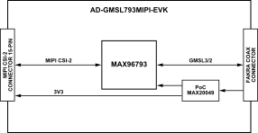

AD-GMSL793MIPI-EVK
GMSL3/2 Deserializer Board for MIPI CSI-2 Cameras
Overview

The AD-GMSL793MIPI-EVK is a compact evaluation board that bridges a MIPI CSI-2 camera interface to a single GMSL3 or GMSL2 serial link using the MAX96793 serializer. It is the next-generation counterpart to the AD-GMSL717MIPI-EVK concept, extending the serializer side from GMSL2 to GMSL3 at up to 12Gbps forward-link rate, while retaining backward compatibility with GMSL2 at 6Gbps or 3Gbps for broader ecosystem support.
The board is intended for rapid evaluation of MIPI camera modules in systems that use GMSL transport to connect remote cameras to centralized processing platforms. Like the AD-GMSL717MIPI-EVK, the board is designed around a compact mechanical format for easy integration into robotics, machine vision, automotive prototyping, and embedded imaging systems.
When paired with a compatible deserializer platform such as the AD-GMSL792MIPI-EVK board, the AD-GMSL793MIPI-EVK can be used as the serializer-side endpoint in a complete MIPI-to-GMSL3/GMSL2-to-MIPI evaluation chain.
Features
MAX96793-based MIPI CSI-2 to GMSL3/GMSL2 serializer
12Gbps GMSL3 forward link, backward compatible with 6Gbps/3Gbps GMSL2
Single MIPI CSI-2 input with support for up to 4 D-PHY lanes at 2.5Gbps/lane
Single GMSL output over 50Ω coax
187.5Mbps bidirectional control channel with I²C and GPIO support
Compact camera-side EVK form factor based on the AD-GMSL717MIPI-EVK concept
Applications
Advanced Driver Assistance Systems (ADAS) camera prototyping
Embedded vision and robotics
Industrial automation and machine vision
High-resolution remote cameras and distributed sensing nodes
Development of next-generation GMSL3 camera links with fallback to GMSL2
Specifications
Parameter |
Specification |
|---|---|
Camera Input |
MIPI CSI-2 v1.3 input to serializer |
GMSL3/2 Output Forward Link |
12Gbps GMSL3, backward compatible with 6Gbps / 3Gbps GMSL2 over 50Ω coax cable |
PoC Input |
5V to 17V input range, optimized for 12V operation |
Cable Length |
Up to 15 meters |
Key Components |
MAX96793, MAX20049 |
System Architecture
{kind=link}

Forward Path (Camera to SoC):
A camera module outputs video over MIPI CSI-2 into the AD-GMSL793MIPI-EVK input connector. The MAX96793 serializes the CSI-2 stream and transmits it over a single coaxial link using 12Gbps GMSL3 or 6Gbps /3Gbps GMSL2 operation, depending on system configuration and companion deserializer capability.
Reverse Path (SoC to Camera):
The control path runs back over the same physical link using the device’s 187.5Mbps reverse channel. This path carries I²C/UART pass-through traffic, configuration transactions, GPIO-related control, and optional tunneled peripheral communications supported by the serializer device.
Power Distribution:
AD-GMSL793MIPI-EVK implements power over cable so the remote serializer side can be powered from the link side without a separate local supply. The MAX20049 companion PMIC family is explicitly positioned as a compact multi-rail camera power solution for automotive/remote camera modules.
What’s Inside the Box
AD-GMSL793MIPI-EVK evaluation board
05-22-D-0050-A-4-06-4-T FFC 22POS 50 mm cable
8 x screws
4 x 10 mm standoffs
Hardware Setup
Equipment Needed
AD-GMSL793MIPI-EVK evaluation board
Compatible SoC development platform (Jetson, Raspberry Pi, AMD)
GMSL3/2 camera with deserializer (for example, AD-GMSL792MIPI-EVK)
Coaxial cable (50Ω)
MIPI CSI-2 FFC/FPC cable (15-pin)
USB-C power supply (5V, minimum 2A)
Multimeter (for verification)

Power System Verification
Ensure all power sources are disconnected.
Verify USB-C power supply specifications (5V ±5%).
Place the switch in the first (upper) position.
Connect USB-C power cable to board.
GMSL3/2 Camera Connection
Connect GMSL3/2 camera to coaxial cable.
Verify cable specifications (50Ω coax).
Connect cable to any of the GMSL connectors.
Ensure secure mechanical connection.
SoC Platform Connection
Select appropriate MIPI CSI-2 FPC cable.
Connect board MIPI output to SoC platform CSI-2 input.
Verify pin compatibility and orientation.
Secure cable connections.
Power-Up Sequence
Apply power via USB-C connector.
Verify led illumination.
Check for GMSL3/2 link lock.
Monitor MIPI activity indicators.
Sample Measurements and Expected Readings
Parameter |
Expected Reading |
|---|---|
Supply voltage at USB-C input |
5.0V ±0.25V |
PoC output voltage |
12.0V ±0.5V, up to 1.2A |
Link lock time |
<100ms typical |
MIPI CSI-2 output levels |
MIPI D-PHY v1.2 compliant |
Software
The GMSL software package provides comprehensive driver support and configuration tools for integrating GMSL3/2 cameras with popular SoC platforms. The software includes device tree configuration and kernel drivers.
Access the resources via the Analog Devices GMSL GitHub repository.
Resources
Design & Integration Files
Download
AD-GMSL793MIPI-EVK Design Support Package
Schematic
PCB Layout
Bill of Materials
Allegro Project
User Guides
Help and Support
Analog Devices will provide limited online support for anyone using the reference design with Analog Devices components via the EngineerZone reference designs forum.
It should be noted that the older the tools’ versions and release branches are, the lower the chances to receive support from ADI engineers.